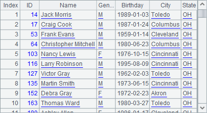
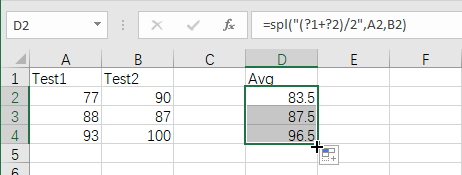
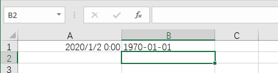
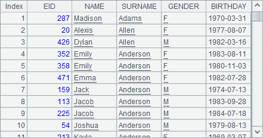
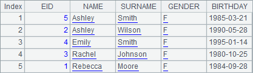
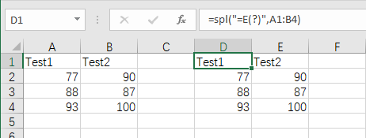
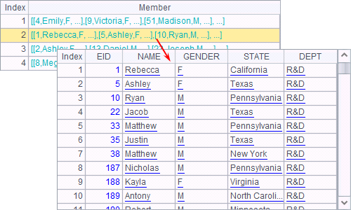
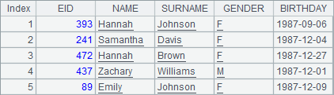

9.1.3 Using esProc in Excel
The features explained in this section only appear in esProc Desktop edition. Users using the other editions can choose to skip them.
The basic form of spl() function is spl(exp). Compute the expression in esProc and return the result. For example:

Enter =spl("=5.(rand(10))") in cell A1 in the above Excel file. The esProc expression "=5.(rand(10))" is a string headed by the equals sign. Then press Enter, confirm the expression, and get the following result:

A random integer within 10 is entered into A1. Actually, the result of computing A1¡¯s expression should have been a sequence. If you need to return the whole result, press Ctrl+Enter while confirming the expression. Reselect cell A1 and press Ctrl+Enter at the same time to get the following result:

Now A1¡¯s expression is recomputed and the result sequence is entered to the Excel spreadsheet.
We can add parameters to spl() function in the form of spl(exp, arg1,¡), which is similar to the use of eval() function. We use quotation marks (?) to represent the parameters in the expression in order; or use ?n to represent the nth parameter. For example:

Compute the average score of two tests using spl() function in D2. The expression can also be written as =spl("(?1+?2)/2",A2,B2), which returns the following result after execution:

If we select D2 at the left corner and drag it to D4, its expression will apply to the whole selected area, where parameters will be adjusted according to position:

When using esProc add-ins in Excel, we often use E() function to generate a table sequence. For example:

When the parameter of spl() function is set up as a stretch of cells in the Excel file, data items in them will be transformed to a two-dimensional sequence and passed to esProc for computation. It is convenient to do this with E() function. To type in formula =spl("=E(?)",A1:B4) in D1 and press Ctrl+Enter to get the following result:

When result of computing spl() function is entered, it overwrites the original data in the Excel spreadsheet. So, you need to pay special attention to it. The spl() function can perform more computations on the table sequence generated by E() function and get the expected result. To modify D2¡¯s expression into =spl("=E(?).derive((#1+#2)/2:Avg)",A1:B4), for example, and press Ctrl+Enter to get the following result:

There is another point. Different from Java, Excel uses its own format for datetime data. For example:

Execute the statement and get the following result:

esProc gets a date data in a different format from that in Excel, which uses a unique datetime format. We can use E(x) function in a spl statement to convert an Excel date specified by x to a generally used format. For example:

Execute the statement and get the following result:

Note that results of both B1 and B2 are actually strings displayed in esProc, which are different from the Excel format date data. If you need to an Excel format date, just use E(x) function again to convert a general format date specified by x to an Excel datetime, as shown below:

Execute the statement and get the following result:

The value of B3 is a number, which is the actual value for the Excel date. Once B3¡¯s format is set as date, the date can be displayed normally:

Find more about executing Excel data handling in esProc in esProc Desktop and Excel Processing.